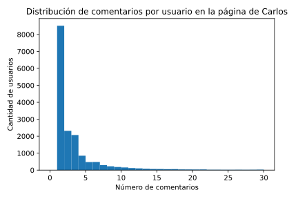
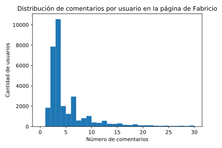
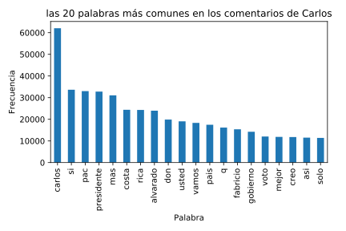
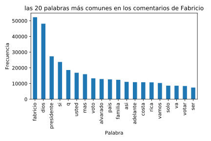

Comparación de comentarios en las páginas de Carlos y Fabricio
Los datos utilizados para este análisis se datan a antes del primero de febrero del 2018. Esto se debe a los cambios de políticas en Facebook en esta fecha, que nos previene de comparar usuarios con respecto a sus comentarios.
Metadatos
Comenzaremos describiendo qué se puede ver de los comentarios sin entrar en el texto en sí.
Cantidad de comentarios
| Candidato | Cantidad de Comentarios |
|---|---|
| Carlos | 65778 |
| Fabricio | 198209 |
En la muestra que tomamos hay muchos más comentarios en la página de Fabricio, muy probablemente por la fecha.
Cantidad de usuarios distintos
| Candidato | Cantidad de Usuarios |
|---|---|
| Carlos | 16681 |
| Fabricio | 33229 |
Fabricio tiene muchos más usuarios distintos, pero comparado con la cantidad de comentarios en total, vemos que deberían haber más usuarios distintos.
Cantidad de comentarios por usuario
 
Como podemos ver, la distribución de Fabricio tiende a estar pesada a los 3-4 comentarios, mientras que Carlos está pesada cerca de 1 comentario.
| Carlos | Fabricio | |
|---|---|---|
| 1er cuartil | 1 | 2 |
| 2do cuartil (mediana) | 1 | 3 |
| 3er cuartil | 3 | 6 |
| 4to cuartil (máxmimo) | 1275 | 422 |
| media | 3.94 | 5.96 |
Esto se muestra cuando vemos que la mediana de Carlos es 3, mientras que la de Fabricio es 1, mientras que la media es 3.94 y 5.96 respectivamente.
Con esto podemos concluir que los usuarios de la página de Fabricio tienden a comentar más que los de Carlos.
Análisis de texto
Palabras más comunes en el texto
 
Comentarios más comunes
| Posición | Comentario (Carlos) | Frecuencia (Carlos) | Comentario (Fabricio) | Frecuencia (Fabricio) |
|---|---|---|---|---|
| 1 | carlos presidente | 2283 | fabricio presidente | 3012 |
| 2 | carlos alvarado presidente | 1686 | fabricio alvarado presidente | 927 |
| 3 | #yocreo | 1437 | amen | 733 |
| 4 | yo creo | 1329 | excelente | 643 |
| 5 | excelente | 1686 | fabricio presidente | 603 |